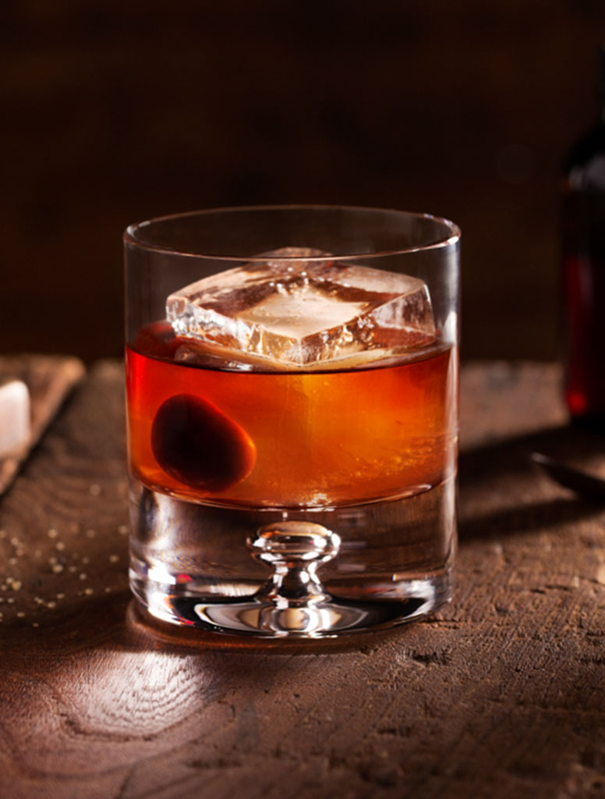

Old Fashioned

Easy to make, harder to top. The old fashioned is one of the oldest drinks on record and has remained a staple in the world of cocktails.
Ingredients
- Whiskey of Choice - 2 oz.
- Simple Syrup - 1/4 to 1/2 oz.
- Angostura Bitters - 3-5 dashes
- Maraschino Cherry
- Orange peel for garnish
Recipe
- Combine whiskey, simple, and ango in a glass filled with ice.
- Use a bar spoon to stir.
- Strain over fresh ice or a large cube if available.
- Top with a cherry and a slice of orange. Drag the orange peel along the rim of the glass for additional flavor.
- Enjoy!
Return home.